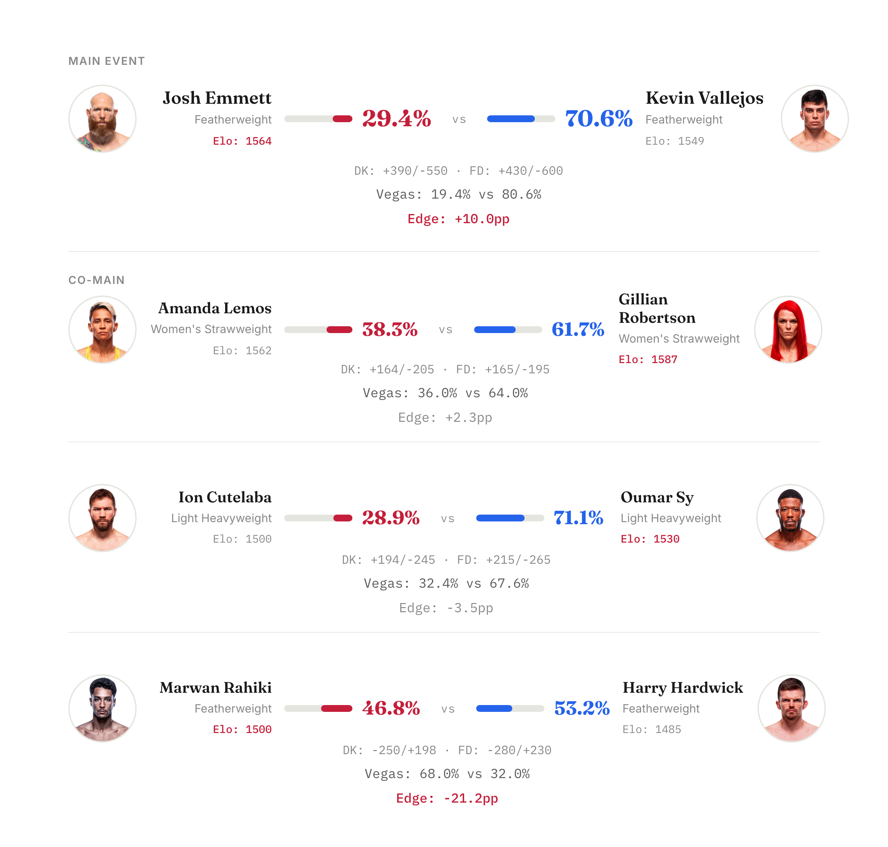
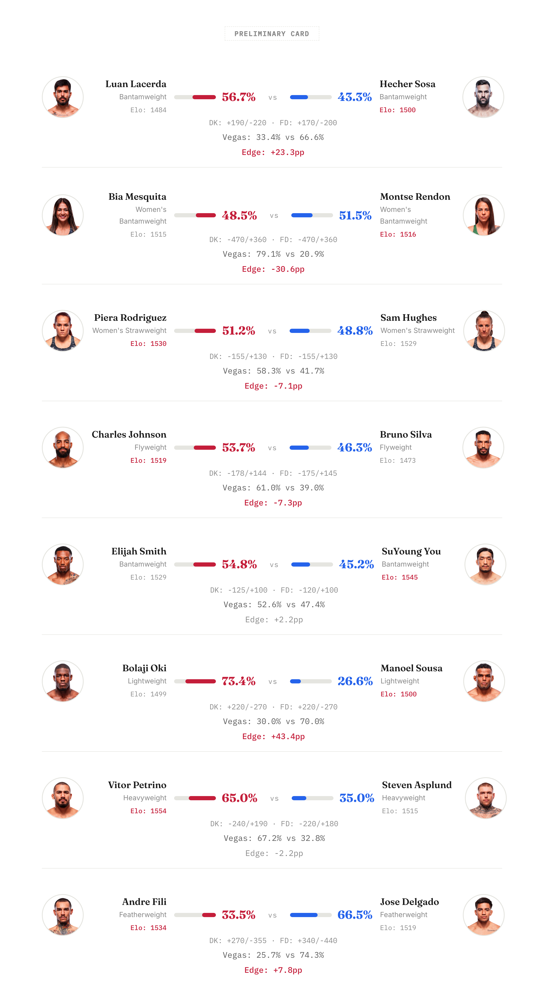

Model gives Vallejos 70.6% in the main event, five double-digit edges vs Vegas on this card
A 12-fight card from Las Vegas this Saturday. The model finds five fights where it disagrees with Vegas by 10+ percentage points, though the two largest edges come from fighters the model barely knows.


Main Event: Josh Emmett vs Kevin Vallejos
The model picks Vallejos at 70.6%, driven by an Elo momentum gap of -66.8 and a 16.8-year age differential (Emmett is 40). Emmett actually carries higher Elo (1564 vs 1549) from 13 more career fights, but the model reads his trajectory as declining. Vegas agrees on direction at 80.6% Vallejos, so the model is comparatively generous to Emmett. If Emmett's experience translates into cage IQ the model can't measure, that 10pp gap over Vegas could mean value on the underdog.
Biggest Edge: Bolaji Oki (+43.4pp vs Vegas)
The card's most extreme model-vs-Vegas disagreement. The model gives Oki 73.4% while Vegas has Sousa at ~70%, a complete directional mismatch. Neither fighter has established UFC data (both ~1500 Elo), so the model is working from thin inputs: Oki fought 176 days more recently and is 8.7 years younger with a 2-inch reach advantage. Sousa isn't in the physical attributes database. Treat this as a near-coinflip between two unknowns rather than a confident call.
Second Biggest Edge: Montse Rendon (+30.6pp vs Vegas)
The model calls Mesquita vs Rendon essentially a coinflip at 51.5% Rendon while Vegas has Mesquita as a -470 favorite (79.1% implied). Both fighters sit at nearly identical Elo (1515 vs 1516), so the model sees no statistical separation. The catch: Bia Mesquita is a multiple-time BJJ world champion, and that grappling pedigree doesn't register in the model's feature set. Textbook case of the model underrating domain-specific skill that hasn't produced enough UFC fight data to show up.
Results recap after the event.